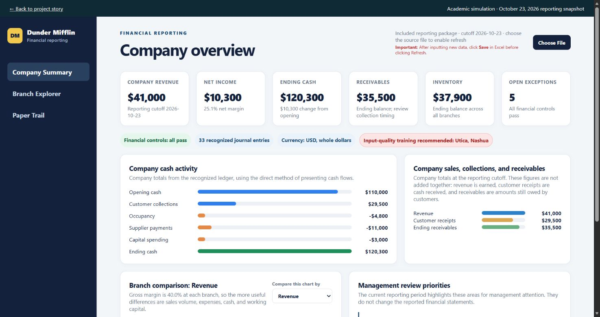

Source records
Preserve branch documents, corrections, and unresolved items.
CASE STUDY 01 / ACADEMIC SIMULATION
A financial reporting system for Dunder Mifflin: three branches, one consolidated view, and a traceable path from source evidence to management reporting.
Branch reports contained sales, receipts, expenses, corrections, repeated documents, and prospective activity. A manager needed to understand the company as a whole without treating every incoming document as a new transaction.
The work centered on two questions: where should management focus collections and credit follow-up, and what explains the differences in branch profitability?
Preserve branch documents, corrections, and unresolved items.
Recognize supported events and keep duplicate evidence separate.
Reconcile branch and consolidated financial statements in Excel.
Compare branches, trace exceptions, and explain financial changes.
I framed the problem around fragmented information and the need for a company-wide view. Working with Codex, I developed the reporting package and revised the dashboard's wording, measures, branch layout, and handoff based on review.
The project record distinguishes software checks from the accounting judgments and final review that remain the student's responsibility.

Open the interactive dashboard ↗Revenue, profit, cash, receivables, and operating context.
Compare Scranton, Utica, and Nashua and inspect their statements.
Inspect controls, corrections, duplicate evidence, and non-posted items.
Scranton's S-101 sale was initially reported at $12,000, with $7,200 in cost of goods sold. The controller's supported correction changed those amounts to $11,000 and $6,600.
Revenue · retained in the evidence register
Revenue · used in the recognized ledger
The reporting package preserves the original evidence while using the corrected amounts. Keeping the original values in current reporting would overstate revenue by $1,000 and gross profit by $400.
Inspect the accounting decision record ↗The saved reporting package checks the balance-sheet equation, cash-flow reconciliation, branch consolidation, and journal completeness. The verification log also records a 40-relationship statement tie-out review.
An early snapshot-generation pass retained late rows and compared timestamps rather than business dates. That could allow post-cutoff activity into an earlier report.
The generator was changed to remove imported tables before writing filtered rows and to compare ISO business dates. The retest checked entry counts, cutoff dates, the utility accrual, and the original versus corrected sale amounts.
The October 9 snapshot contains 24 recognized entries; October 16 contains 30. Both preserved the appropriate information available at their cutoff.
At the final cutoff, the simulated company reported $41,000 in revenue, $10,300 in net income, and $120,300 in ending cash. Utica led revenue and profit, while also holding the largest receivables balance at $15,500.
All three branches had a 40% gross margin. That directed attention toward sales volume, operating expenses, and collections. Nashua's operating-expense ratio was the highest.
These are fictional classroom results. The case does not include receivables aging or a complete operating history, so the dashboard identifies review priorities rather than proving a collections problem.
08 / SUPPORTING WORK